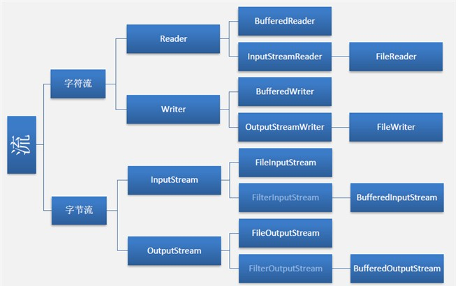

数据流中的API结构和对象继承关系信息
1. 字符流的由来
因为文件编码的不同，而有了对字符进行高效操作的字符流对象。
原理：其实就是基于字节流读取字节时，去查了指定的码表。
字节流和字符流的区别：
(1). 字节流读取的时候, 读到一个字节就返回一个字节. 字符流使用了字节流读到一个或多个字节(中文对应的字节数是两个, UTF-8码表中是3个字节)时. 先去查指定的编码表, 将查到的字符返回.
(2). 字节流可以处理所有类型数据, 如图片, mp3, avi. 而字符流只能处理字符数据.
结论: 只要是处理纯文本数据，就要优先考虑使用字符流。除此之外都用节流。